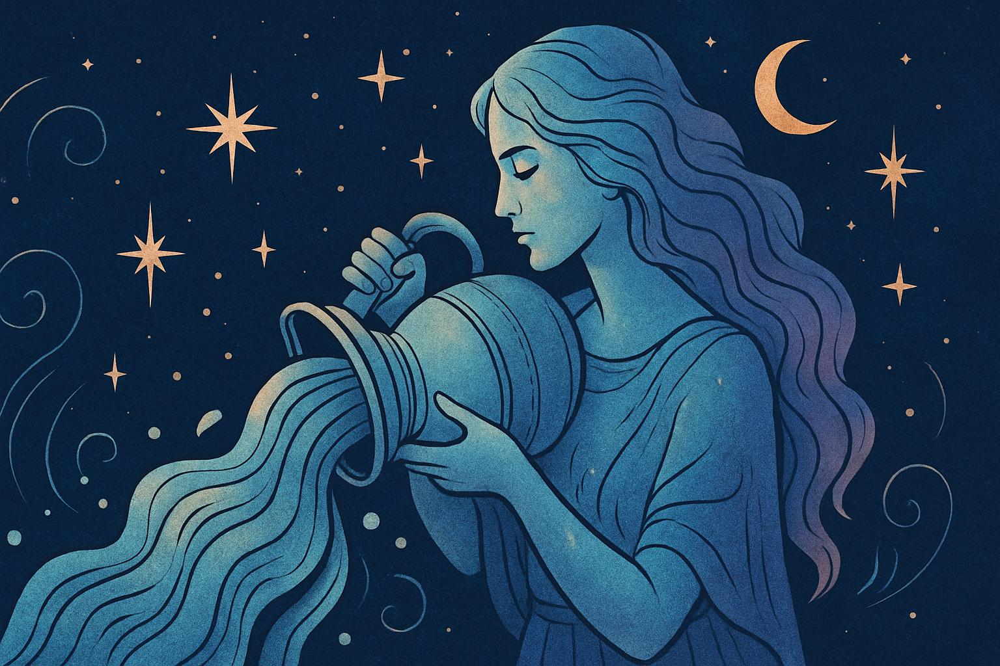

Vandenis (sausio 20 – vasario 18) yra vienuoliktasis zodiako ženklas — fiksuotas oro ženklas, valdomas Urano ir Saturno. Pagrindinis bruožas: originalumas ir bendruomeniškumas. Vandenis žiūri į ateitį ir į žmones kaip į sistemą, kurią galima permąstyti:
